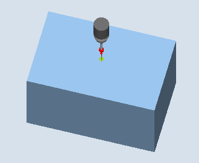

| Note |
Note about all calibration methodsFor precise measurements in conjunction with the functions swivel/Cycle800 or TRAORI, ensure that the probe is calibrated in the same way as measurement will subsequently be performed. In other words, the probe should be calibrated in the mechanical constellation of rotary and linear axes that corresponds to the measurement! |
Using this measuring variant, the length of a workpiece probe can be calibrated in the tool axis on a known surface (reference area). This can be done, for example, on a workpiece.
The probe travels in the measuring direction on the edge (e.g. workpiece)
Calibrate: Length at edge (CYCLE976)
The length of the probe is determined corresponding to the setting in general MD 51740 $MNS_MEA_FUNCTION_MASK, bit 1. The setting determines whether the tool length refers to the probe sphere center or the probe sphere circumference.
In the "Tool length to sphere center" variant, a trigger value is entered in the calibration data according to the calibration direction.
The probe must be active as tool.
Probe type:
3D multi probe (type 710)
Mono probe (type 712)
L probe (type 713)
| Note |
L probe application (type 713)Calibration in +Z (for towing measurement) is possible with the L probe. The basic alignment of the L probe boom is toward +X (offset angle = 0). If the probe boom is to be aligned in a different direction in the measuring program, this can be performed through a rotation around the tool axis (e.g. ROT Z = 90). |
The probe length must be known in the program for collision-free positioning of the workpiece probe and entered in the tool offset memory.
The sphere radius must be known exactly and entered in the tool data. For example, this can be implemented using a previous calibration in the ring or on the sphere (valid for type 710, 712).
The calibration surface is perpendicular to the measuring axis or tool axis.
The probe must be positioned opposite to the calibration surface.
The distance between the probe and calibration surface should be approximately the same as the selected measurement path (DFA).
According to the measuring direction (X, Y, Z), the distance between the probe in AUTOMATIC operation and the calibration surface is the same as the distance of the selected measurement path (DFA). In JOG operation, the start position is approached again.
See also:
Calibrate: Length at edge (CYCLE976)